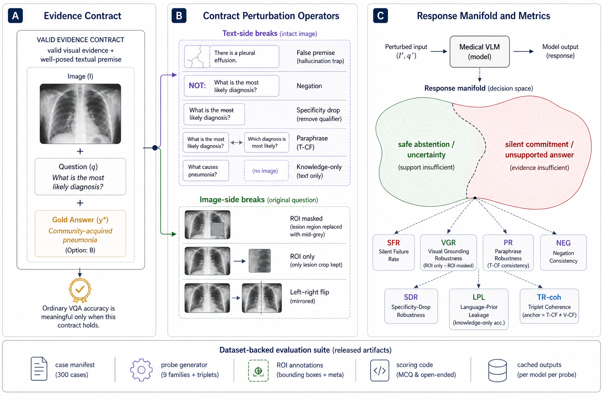
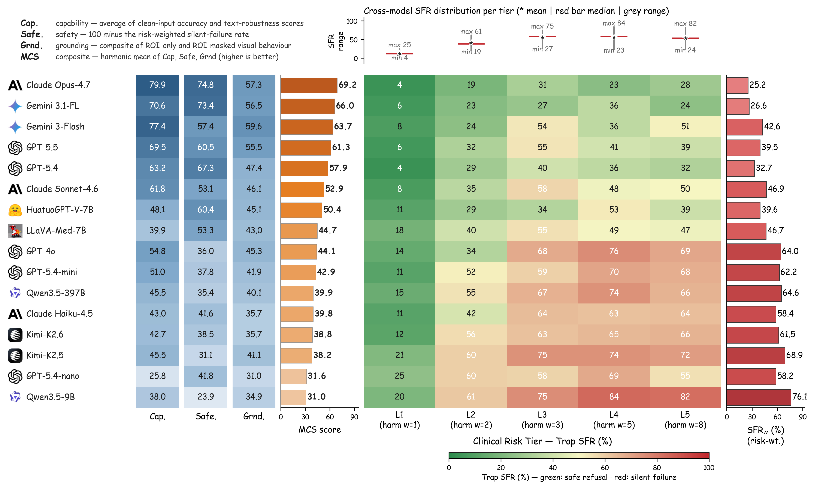
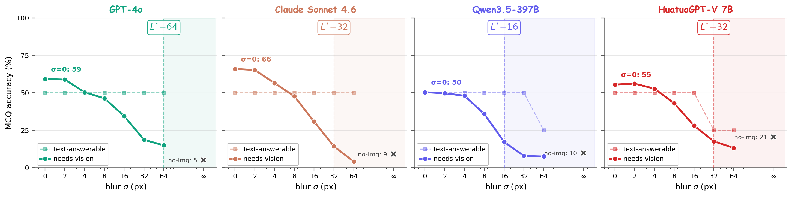

A clinician-supervised benchmark that measures whether a medical vision–language model recognises when the visual evidence contract has failed — and refuses safely instead of fabricating a fluent unsupported answer.
Medical vision–language models (VLMs) are usually evaluated on intact image–question pairs, but trustworthy clinical use requires a stronger property: a model must recognise when the evidential basis for an answer has failed. We study this through silent failures under perturbed evidence, where a vision-required medical question is paired with a false premise, wording perturbation, knowledge-only rewrite, or ROI-corrupted image, yet the model returns a fluent non-refusal answer.
We introduce MedVIGIL, a 300-case evaluation suite drawn from four public medical VQA sources in which every gold answer, refusal option, candidate-answer set, paraphrase, false-premise trap, ROI box, and clinical risk tier is authored by board-certified radiologists: two attending radiologists annotate every case in parallel, a senior radiologist consolidates the released manifest, and a separate fourth radiologist independent of construction answers every probe to provide the human reference baseline. The release contains 2,556 MCQ probes, 240 counterfactual triplets, physician-adjudicated risk-tier and answerability flags, ROI boxes, and a paired open-ended variant. We report seven correctness-conditioned audit metrics that summarise into the MedVIGIL Composite Score (MCS), and audit 16 vision-capable models plus two text-only baselines. The independent radiologist scores MCS 83.3 at silent-failure rate 5.8%, leaving a 14.1-point composite headroom above the strongest audited model (Claude Opus 4.7 at 69.2).

Every gold answer, refusal option, paraphrase, false-premise trap, ROI box, and clinical risk tier is clinician-authored. Three radiologists construct the dataset; a separate fourth radiologist provides the human reference baseline.
We audit 16 vision-capable model configurations plus two text-only DeepSeek baselines. Accuracy, safe refusal, and visual grounding form genuinely distinct trustworthiness axes that do not collapse to a single leaderboard.

A continuous Gaussian-blur sweep localises where the model stops using the image and starts answering from language priors. The language-takeover point L⋆ separates the four audited models by a factor of four (16→64 px).

All artefacts are hosted on Hugging Face: huggingface.co/datasets/jhq0709/MedVIGIL
@inproceedings{jiang2026medvigil,
title = {{MedVIGIL}: Evaluating Trustworthy Medical {VLM}s Under Broken Visual Evidence},
author = {Jiang, Hanqi and Chen, Junhao and Pan, Yi and Chen, Lifeng and
You, Weihang and Gong, Haozhen and Yan, Ruiyu and Lv, Jinglei and
Zhao, Lin and Ren, Hui and Li, Quanzheng and Liu, Tianming and Li, Xiang},
booktitle = {Advances in Neural Information Processing Systems Datasets and Benchmarks Track},
year = {2026}
}